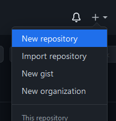
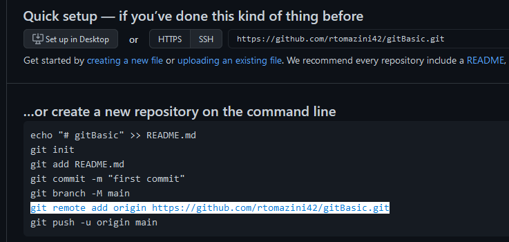

Git e GitHub Guia Rápido


Acesse o link:
DownloadSiga as instruções e instale o Git padrão.
Caso esteja usando Linux, antes de tentar instalar verifique no console com o comando abaixo se você já não está com git instalado.
User@NotebookName
$ git --version
Caso precise configurar pela primeira vez o User e email para as alterações, use os comandos abaixo:
User@NotebookName
git config --local user.name "Seu nome aqui"
git config --local user.email "seu@email.aqui"
Após a instalação abra o "bash", no Windows seu icone é este:

Você pode também abrir dentro de uma pasta durante o explorer, basta clicar com o botão direito e selecionar "Git Bash Here":

Para iniciar um repositório, usamos o comando abaixo que retornará a última linha, mostrando o inicio do repositório:
User@NotebookName
$ git --init
Initialized empty Git repository in C:/Users/Usuario/Documents/programando/Git/.git/
Após iniciar o repositório, se usarmos o comando
$ git status
Teremos uma lista de "Untracked files", que são os arquivos que não estão sendo monitorados pelo git.
Então, para adicionar os mesmos em nosso Git, temos dois comandos, o primeiro adiciona apenas o arquivo especificado
$ git add index.html
Este segundo adiciona todos os arquivos da pata
$ git add .
Para fazer o Commit e salvar suas alterações, usamos o comando abaixo:
$ git commit -m "Mensagem descritiva de alterações"
O "-m" é uma indicação da mensagem que está entre aspas, que será a mensagem da alteração. Uma boa prática é que ela seja descritiva e pequena, não uma documentação mas apenas uma mensagem do que foi alterado
Para ver o histórico de alterações, fazemos com o seguinte comando:
$ git log
Esse comando retornará nossas alterações, quem fez,em qual horário, hash,email e mensagem deixada.
A imagem abaixo mostra ass alterações deste site:

Além disso, temos outras maneiras de acessar os históricos, incluindo a visualização de alterações, abaixo alguns exemplos de comandos:
$ git log --oneline
->Exibe as alterações em uma linha resumida
$ git log -p
->Exibe as alterações detalhadas com as linhas que foram adicionadas
As vezes queremos que algo não esteja no projeto, seja uma configuração de IDE seja um arquivo de credenciais com dados sensíveis,
Fazemos então uma lista de arquivos que não podem estar sincronizados ao Git, isso é feito com um arquivo ".gitignore", onde lá dentro ficará os arquivos a serem ignorados.
.gitignore
ideConfig.txt
keys.db
exemplo.jpg
FotosDaFestaFicaramOtimas.exe
Precisamos adicionar o gitignore também ao git para que ele possa usa-lo, use o comando :
git add .gitignore
git commit -m "Adicionando .gitignore"
Para um repositório remoto, precisamos criar o chamado "repositório puro", ele vai conter apenas as alterações dos arquivos e não cópias dos mesmos. Para adicionar um repositório a nossa lista de repositórios acessíveis precisamos executar o seguinte comando:
$ git remote add nomeRepositorio localRepositorio
O localRepositorio pode ser uma URL, um diretorio ou um servidor
Quando precisamos pela primeira vez iniciar um trabalho pela primeira vez a partir de determinado repositório nós usamos o comando de clonagem:
$ git clone localRepositorio
Após algumas alterações e Commits eu preciso "enviar para o repositório" minhas alterações. Para fazer isso eu uso o seguinte comando:
$ git push localRepositorio master
Agora alguma pessoa fez uma modificação de alguma coisa, para sintonizar as alterações precisamos do comando:
$ git pull localRepositorio master
Github é usado para controle e versionamento remotamente, esse é o serviço que iremos usar. Para criar um repositório você precisa de uma conta. Com uma conta você pode clicar no seguinte botão:
Dessa forma será criado um novo repositório no GitHub, por enquanto configuremos para ele estar vazio
Em destaque temos o "git remote add origin https://github.com/rtomazini42/gitBasic.git", este comando é para sincronizarmos como vimos antes
Logo em seguida podemos tentar o "git push origin main" para mandar o que trabalhamos o repositório "origin" que adicionamos antes.
Para que tudo ocorra bem, tente o código abaixo
$ git remote add origin https://github.com/rtomazini42/gitBasic.git
$ git Branch -M main
$ git push -u origin main
Devido a novas atualizações há possibilidade de ao invés de pedirem nossas credenciais abrir uma janela pedindo autorização via navegador, basta clicar e logar no navegador para começar a fazer o push :)
Um Branch separa uma versão para você trabalhar no projeto sem interferir no código "final" nem no trabalho de outras pessoas. Os Branchs ramificam o código, criamos uma "nova linha".
Para fazer isso no git-Bash usamos:
$ git vranch dev1
Assim criamos uma nova Branch
Porém, ainda estamos na outra linha de Desenvolvimento, para trocar precisamos do seguinte comando:
$ git checkout dev1
Trocando finalmente para outra Branch, como se tivessemos outra linha no Git:

Podemos também criar uma Branch e trocar diretamente para ela:
$ git checkout -b dev2
Para unir duas "linhas" de desenvolvimento nós usamos o "merge"
$ git checkout master
$ git merge dev2
Iremos ter de commitar um comitt de merge. Pra isso abrirá um editor chamado "VIM" no bash. Para sair use :x
Agora, suponha-mos que a dev2 fez um trabalho tão bom que queremos colocar tudo na master se baseando a partir da Branch dela, existe um comando para:
$ git checkout main
$ git rebase dev2
Dessa forma a Branch da dev2 agora é a main!
Suponha-mos que o dev1 fez a seguinte alteração:
22 | listaCompras = ["abacate", "banana", "melancia"]
23 | print(listaCompras)
Porém, a dev2 também mexeu no mesmo trecho:
22 | listaCompras = ["mamão", "banana", "melancia"]
23 | print(listaCompras)
Ao tentar realizar o merge, temos um erro
$git merge dev2
Automatic merge failed; fix conflicts and then commit result
Alguns editores irão destacar o conflito mostrando ambas as linhas, outros indicarão ambos os conteúdos. Para corrigir o conflito basta escolher qual você quer manter e excluir o outro.
Após isso, fazemos o git add e então o git commit para fazer o commit de merge. ":X" para salvar e sair
Mas quando a dev2 resolveu esse conflito escolhendo a versão dela, o dev1 trabalhava em outra parte do código, ao tentar enviar ele se depara com o seguinte erro:
$git merge main
Automatic merge failed; fix conflicts and then commit result
Então precisamos puxar o código alterado da dev2, para evitar isso acontecer com frequência precisamos sempre fazer o pull antes de começar a trabalhar:
$git pull main
$git push dev main
Az vezes precisamos "voltar", dar o ctrl+z para conseguir continuar. Como fazer isso no git?
Para desfazer um commit enviado primeiro precisamos pegar o hash dele, fazemos isso com:
$git log
Onde o comando responderá com varios logs:
commit n40t3mn4d44scr1t0aqu1okok
Author: Álvaro de Campos - alvarocamposdev@poeta.com
Adicionando o masoquismo através de maquinismos!
commit a1t3r4c40Bug4d4S0c0rr1nh0
Author: Renan Tomazini - temnogit@anarquistadeSistemas.com
Aplicativo feito no flash adicionado a main, confia!
commit l3v4nt31asS3fuip3g4r4gu4
Author: Carolina Maria de Jesus - carolmaria@poeta.com
Adicionada saída de dados e visualizador
commit pYthOn1c0f4nt4sySaynoMore
Author: Marie Curie - mariecurie@radionico.com
Medidor de radiação adicionado.
commit S3ndC4t5P1ctur3sP134s3ovo
Author: Douglas Adams- douglinhadamassa42@mochileiros.com
Criada maquina de improbabilidade infinita
Indentificado o commit que queremos reverter, vamos dar o comando para tirar ele do projeto
Vamos usar o "git revert" juntamente com o hash do commit bugado:
$git revert a1t3r4c40Bug4d4S0c0rr1nh0
:x para sair do VIM após editar a mensagem